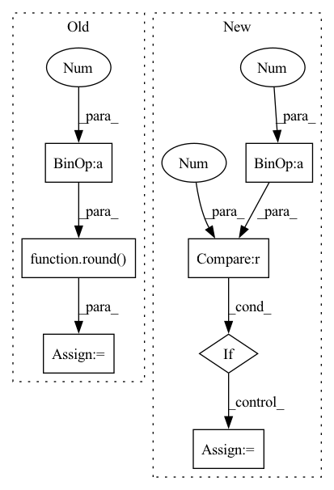

Pattern ID :14948

Before Change
y1 = y
y2 = y + h
//cv2.rectangle(img, (x1, y1), (x2, y2), (0, 255, 0), 2)
font_size = round(w / (line_count * 1.2))
rows = h // font_size
cols = w // font_size
while rows * cols < len(text) :
font_size -= 1
After Change
// font_size -= 1
// rows = h // font_size
// cols = w // font_size
fg_avg = (fg[0] + fg[1] + fg[2]) / 3
if bg :
bg_avg = (bg[0] + bg[1] + bg[2]) / 3
if abs(fg_avg - bg_avg) < 40 :
bg = None
bgsize = int(max(font_size * 0.07, 1)) if bg else 0
spacing_y = 0//int(max(font_size * 0.05, 1))
spacing_x = spacing_y
In pattern: SUPERPATTERN
Frequency: 4
Non-data size: 7
Instances
Fragment ID: 49811354
Project Name: zyddnys/manga-image-translator
Commit Name: 605e7ecd9cf3b0a00b67fab40020c269a7bea4a3
Time: 2021-07-26
Author: zyddnys@outlook.com
File Name: text_render.py
M Class Name: AnonimousClass
N Class Name: AnonimousClass
M Method Name: put_text_vertical(13)
N Method Name: put_text_vertical(11)
M Parent Class:
N Parent Class:
M File Name: text_render.py
N File Name: text_render.py
M Start Line: 256
M End Line: 289
N Start Line: 264
N End Line: 304
'>
Before Change
max_val = max(img_tmp.shape[1], img_tmp.shape[0])
// 2) divide the image in tiles
tiles = slice_image(img, round(max_val/45))
// 3) upscale each tiles
for tile in tiles:
tile_adapted = adapt_image_for_deeplearning(tile.filename)
tile_adapted = tile_adapted.to(device, non_blocking = True)
tile_upscaled = model(tile_adapted)
tile_upscaled = tensor2uint(tile_upscaled)
imsave(tile_upscaled, tile.filename)
tile.image = Image.open(tile.filename)
tile.coords = (tile.coords[0]*4, tile.coords[1]*4)
// 6) then reconstruct the image by tiles upscaled
image_upscaled = reunion_image(tiles)
// 7) remove tiles file
delete_tiles_from_disk(tiles)
// 8) try to remove tiles segmentation
if "BSRGAN" in AI_model:
image_upscaled = remove_image_patches_imperfection(image_upscaled, upscale_factor)
// 9) save reconstructed image
cv2.imwrite(result_path, image_upscaled)
After Change
img_tmp = cv2.imread(img)
val = min(img_tmp.shape[1], img_tmp.shape[0])
num_tiles = round(val/cut_image_factor)
if (num_tiles % 2) != 0:
num_tiles += 1
// 3) divide the image in tiles
tiles = slice_image(img, num_tiles)
'>
Fragment ID: 49811329
Project Name: djdefrag/qualityscaler
Commit Name: 66cef0855cfbe41b27938a88cd316575f61f5507
Time: 2022-05-04
Author: jjluca96@gmail.com
File Name: QualityScaler.py
M Class Name: AnonimousClass
N Class Name: AnonimousClass
M Method Name: torch_AI_upscale_video_frames(4)
N Method Name: torch_AI_upscale_video_frames(4)
M Parent Class:
N Parent Class:
M File Name: QualityScaler.py
N File Name: QualityScaler.py
M Start Line: 620
M End Line: 673
N Start Line: 416
N End Line: 465
'>
Before Change
max_val = max(img_tmp.shape[1], img_tmp.shape[0])
// 2) divide the image in tiles
tiles = slice_image(img, round(max_val/45))
// 3) upscale each tiles
for tile in tiles:
tile_adapted = adapt_image_for_deeplearning(tile.filename)
tile_adapted = tile_adapted.to(device, non_blocking = True)
tile_upscaled = model(tile_adapted)
tile_upscaled = tensor2uint(tile_upscaled)
imsave(tile_upscaled, tile.filename)
tile.image = Image.open(tile.filename)
tile.coords = (tile.coords[0]*4, tile.coords[1]*4)
// 6) then reconstruct the image by tiles upscaled
image_upscaled = reunion_image(tiles)
// 7) remove tiles file
delete_tiles_from_disk(tiles)
// 8) try to remove tiles segmentation
if "BSRGAN" in AI_model:
image_upscaled = remove_image_patches_imperfection(image_upscaled, upscale_factor)
// 9) save reconstructed image
cv2.imwrite(result_path, image_upscaled)
After Change
img_tmp = cv2.imread(img)
val = min(img_tmp.shape[1], img_tmp.shape[0])
num_tiles = round(val/cut_image_factor)
if (num_tiles % 2) != 0:
num_tiles += 1
// 3) divide the image in tiles
tiles = slice_image(img, num_tiles)
'>
Fragment ID: 49811330
Project Name: djdefrag/qualityscaler
Commit Name: 66cef0855cfbe41b27938a88cd316575f61f5507
Time: 2022-05-04
Author: jjluca96@gmail.com
File Name: QualityScaler.py
M Class Name: AnonimousClass
N Class Name: AnonimousClass
M Method Name: torch_AI_upscale_multiple_images(4)
N Method Name: torch_AI_upscale_multiple_images(4)
M Parent Class:
N Parent Class:
M File Name: QualityScaler.py
N File Name: QualityScaler.py
M Start Line: 563
M End Line: 616
N Start Line: 364
N End Line: 414
'>
Before Change
y1 = y
y2 = y + h
//cv2.rectangle(img, (x1, y1), (x2, y2), (0, 255, 0), 2)
font_size = round(h / (line_count * 1.2))
rows = h // font_size
cols = w // font_size
while rows * cols < len(text) :
font_size -= 1
After Change
// cols = w // font_size
fg_avg = (fg[0] + fg[1] + fg[2]) / 3
if bg :
bg_avg = (bg[0] + bg[1] + bg[2]) / 3
if abs(fg_avg - bg_avg) < 40 :
bg = None
bgsize = int(max(font_size * 0.07, 1)) if bg else 0
spacing_x = 0//int(max(font_size * 0.05, 1))
spacing_y = spacing_x
'>
Fragment ID: 49811347
Project Name: zyddnys/manga-image-translator
Commit Name: 605e7ecd9cf3b0a00b67fab40020c269a7bea4a3
Time: 2021-07-26
Author: zyddnys@outlook.com
File Name: text_render.py
M Class Name: AnonimousClass
N Class Name: AnonimousClass
M Method Name: put_text_horizontal(13)
N Method Name: put_text_horizontal(11)
M Parent Class:
N Parent Class:
M File Name: text_render.py
N File Name: text_render.py
M Start Line: 296
M End Line: 331
N Start Line: 310
N End Line: 350